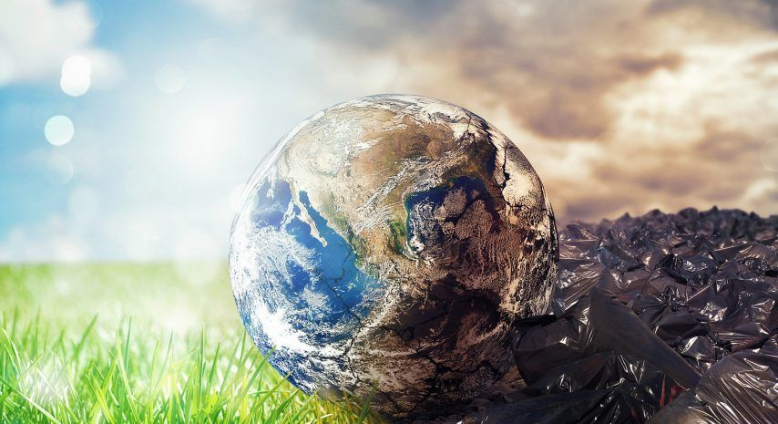
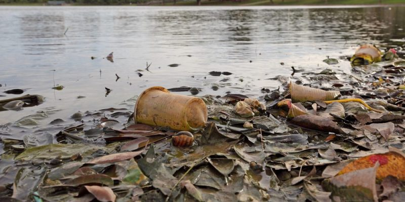
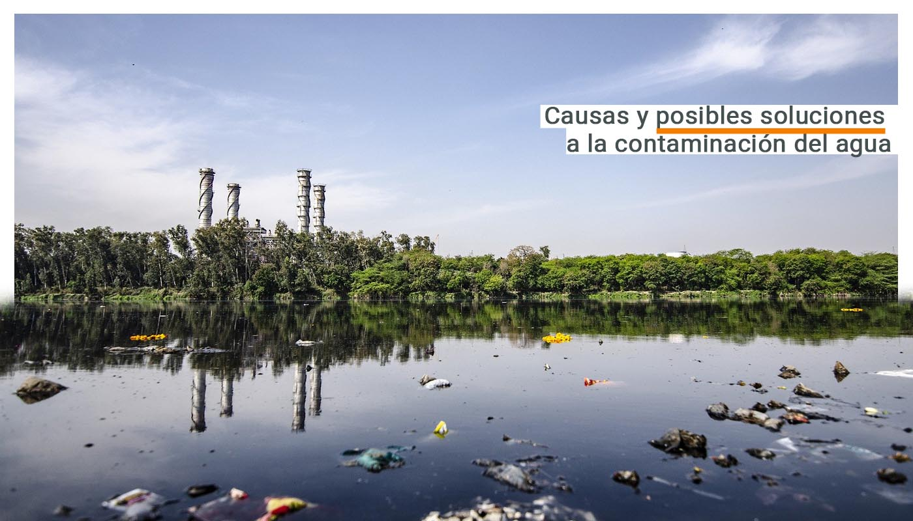
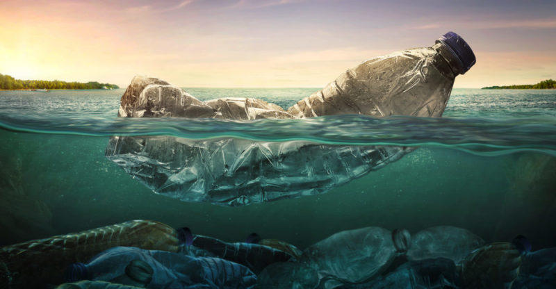
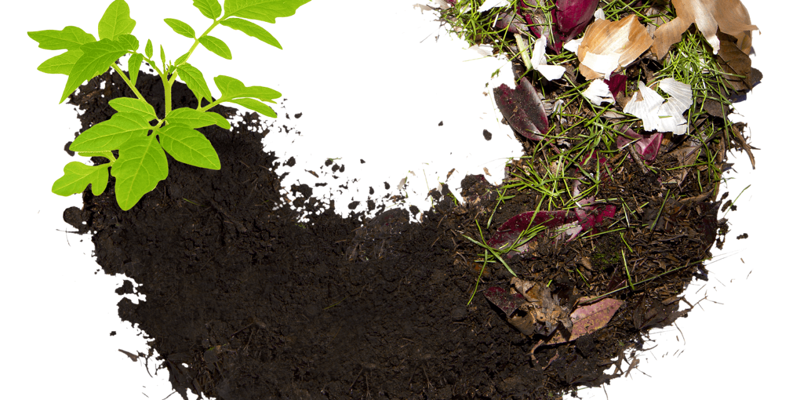
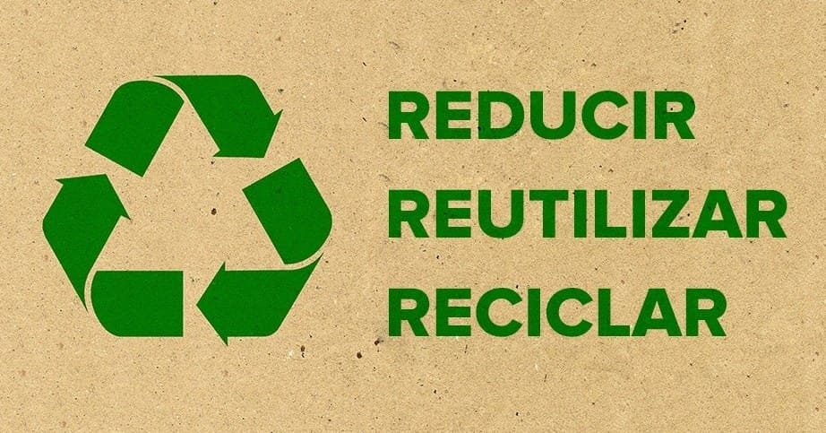

El reciclaje es un proceso donde las materias primas que componen los materiales que usamos en la vida diaria como el papel, vidrio, aluminio, plástico, etc; una vez terminados su ciclo de vida útil, se transforman en nuevos materiales.
En el mundo se producen más de dos mil millones de toneladas de residuos al año, y si no se toman medidas relevantes se llegaran a más de tres mil millones al año 2050. El 12% de estos residuos corresponde a plásticos, uno de los componentes con mayores problemas para su aprovechamiento. He aquí donde necesitas las 3Rs, Reducir, Reutilizar y Reciclar.
El deterioro de nuestro medio ambiente ha causado interés en el cambio de conciencia ecológica tanto en las personas como en las empresas, y esto ha conducido a buscar maniobras o estrategias para de alguna forma revertir todo el daño ocasionado en nuestro planeta. Una de los principales materiales que pueden reciclarse son: El plástico, el vidrio, el cartón, el papel, el aluminio,los aceites, los metáles y los desperdicios orgánicos.